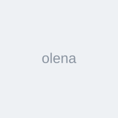
★★★★★
Олена
«Після другого дня стало значно легше вставати зі стільця. Поперек менше тягне ввечері.»
Комплекс вправ, який займає лише 15–20 хвилин на день.
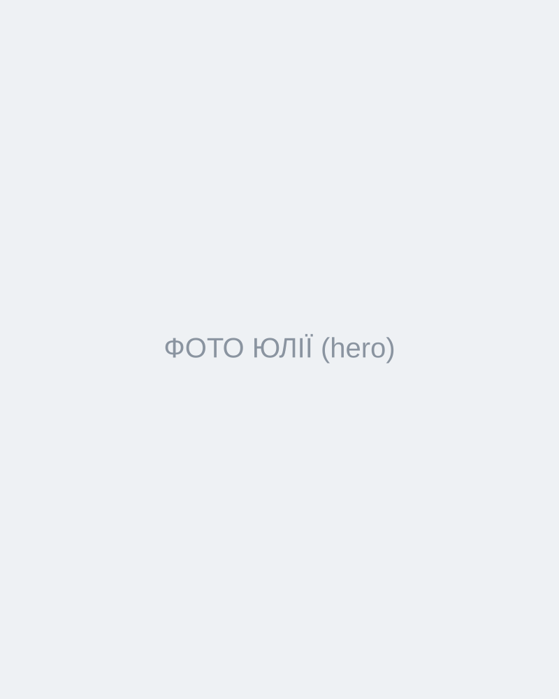
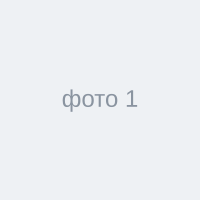
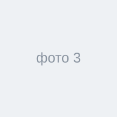
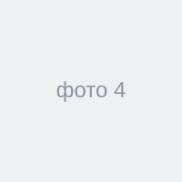
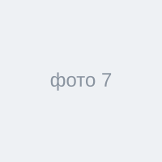
Не ще 50 випадкових вправ.
А послідовна система на 7 днів, яку ви проходите крок за кроком.
ХОЧУ НА ПРАКТИКУМТому що поперек не працює окремо від решти тіла.
Ви можете безкінечно його розтягувати. Але якщо:
поперек може продовжувати отримувати зайве навантаження.
Ми будемо працювати комплексно.
Повернемо більше свободи руху.
Додамо роботу м’язів, які мають допомагати стабілізувати таз.
Навчимося краще контролювати його положення.
Повернемо рух туди, де його часто не вистачає після годин за ноутбуком.
Будемо рухати його без агресивного «дотягування через біль».
Використаємо для контролю руху та зниження зайвого напруження.
Послідовна система, яка крок за кроком веде до результату.
Короткі чіткі практики без зайвої теорії.
Тазостегновими, сідницями, тазом, грудним відділом та попереком.
Курс побудований так, щоб ви відчули зміни в тілі та самопочутті вже під час проходження.
«Знову болить поперек…»
«Треба якось розім’ятися…»
«Не знаю, що можна робити, а що ні…»
«Посиділа дві години — і знову тягне…»
У ВАС Є ГОТОВА СИСТЕМА
Ви знаєте:
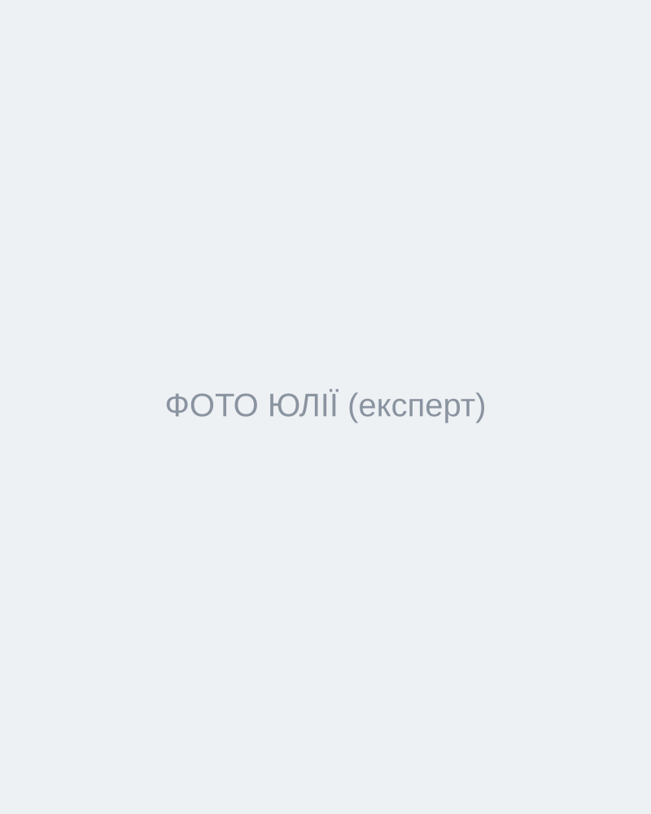
Йога-викладачка, йога-терапевтка, фахівчиня з фізичної терапії та реабілітації з 17-річним досвідом практики.
Я поверну кошти без зайвих запитань, якщо вам не сподобається або не підійде курс.
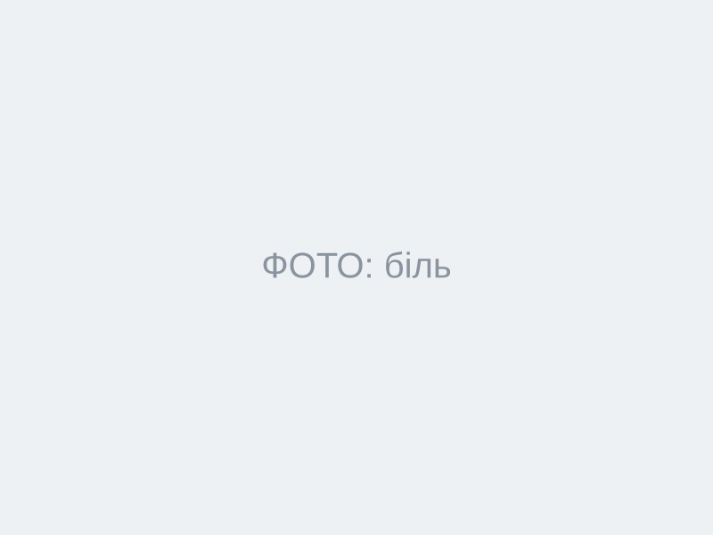
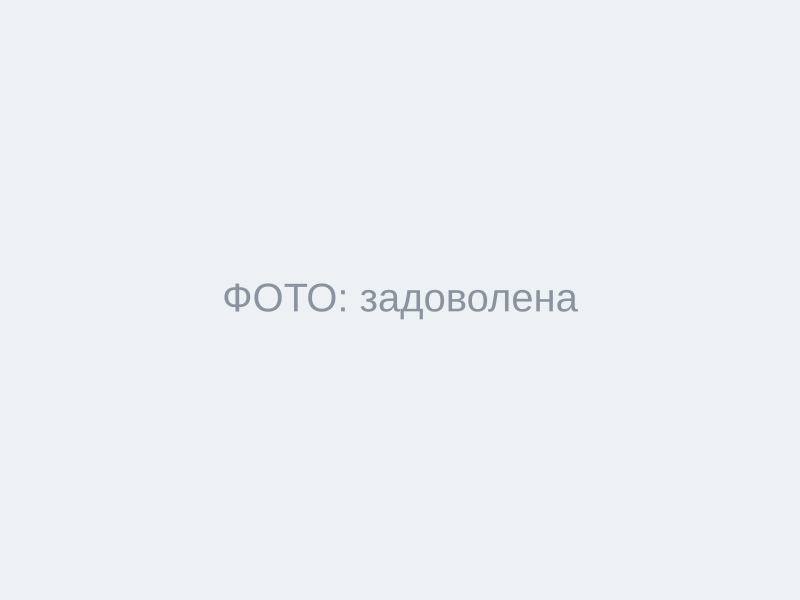
Результат коштує дешевше, ніж 1 консультація спеціаліста
КУПИТИ КУРСАкція завершена

«Після другого дня стало значно легше вставати зі стільця. Поперек менше тягне ввечері.»
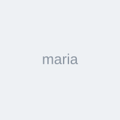
«Мені дуже зайшов формат 15–20 хвилин. Зрозуміла, що справа не тільки в попереку, а ще в тазостегнових і сідницях.»
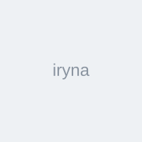
«Після дороги й сидячої роботи спина вже не така “дерев’яна”. Залишила собі кілька вправ на щодень.»
Зібрали відповіді на найпоширеніші з них, щоб вам було легше прийняти рішення.
Курс підійде, якщо у вас періодичний або постійний біль у попереку, відчуття напруги, скутості чи дискомфорту після сидячої роботи, тренувань або побутових навантажень.
Спеціальної підготовки не потрібно. Практики підходять і новачкам.
Достатньо 15–20 хвилин на день.
Курс повністю онлайн. Ви отримуєте доступ до відеоуроків і можете переглядати їх із телефону, планшета або комп’ютера.
Так. Після оплати ви отримуєте доступ до матеріалів (6 місяців) і можете повертатися до практик.
Зручний одяг, килимок для йоги та 15–20 хвилин вільного часу.
Курс розрахований на м’яку рухову практику. Якщо біль гострий, виник після травми, супроводжується слабкістю, онімінням або іншими незвичними симптомами — перед заняттями варто проконсультуватися з лікарем.
Реакція індивідуальна. Учасники можуть відчути зміни у відчутті скутості та рухливості вже під час проходження курсу.